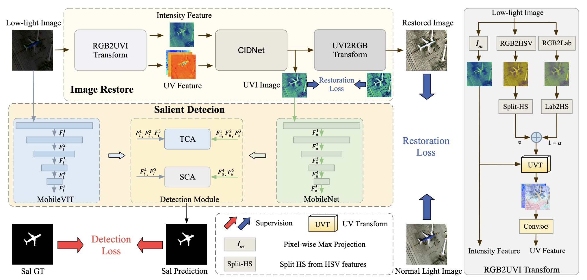
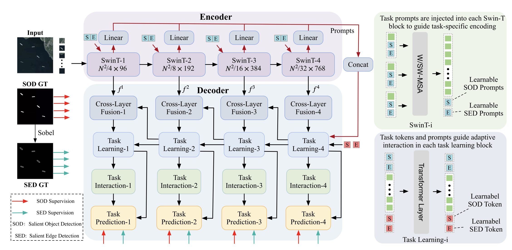

About
News
- [TGRS] DarkSalNet was accepted by TGRS.
- [JXUST] Graduated from Jiangxi University of Science and Technology with a M.Eng. in Artificial Intelligence.
- [JASTARS] MTPNet was accepted by JASTARS.
Experiences
M.Eng. in Computer Technology @ Jiangxi University of Science and Technology
Supervisor: Prof. Huilan Luo
Publications

Journal
CCF B
Cross-Modal Fusion with UVI Enhancement for Salient Object Detection in Low-Light ORSI Images
TGRS 2026

Journal
JCR Q1
Prompt-Driven Multitask Learning With Task Tokens for ORSI Salient Object Detection
JASTARS 2025